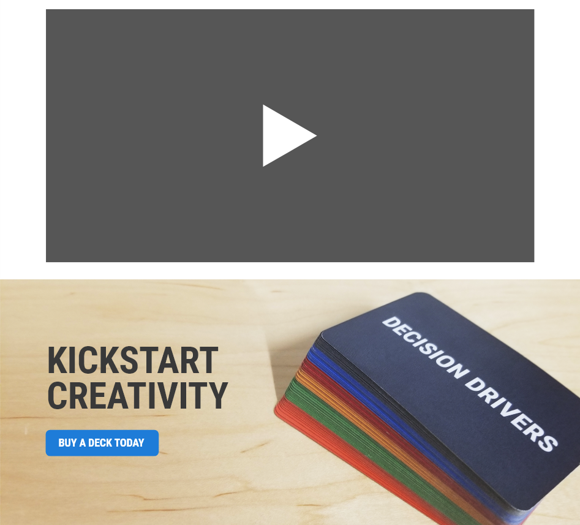
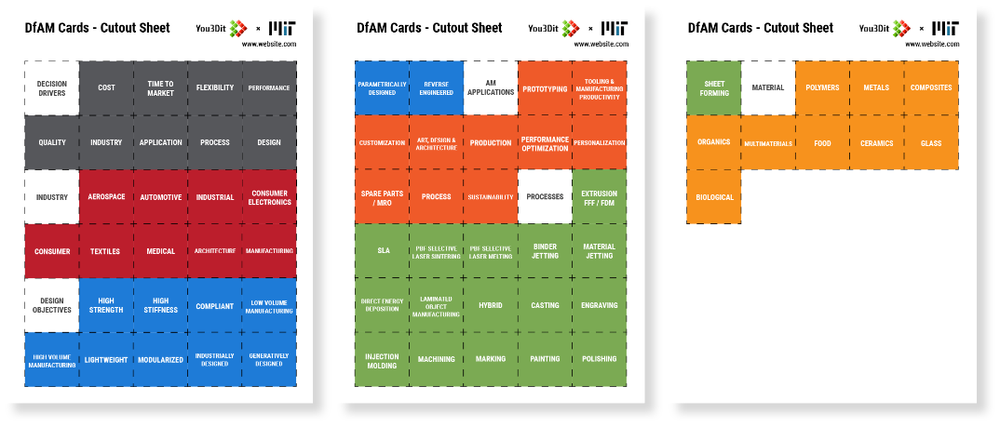

ABOUT DfAM CARDS
A Discussion Tool for Additive
Manufacturing Engineers
DfAM (Design for Additive Manufacturing) Cards is a discussion tool that encourages conversation within organizations, businesses and teams around Additive Manufacturing innovations. There are 70+ cards among six categories and include various activities that facilitate discussion.
You3Dit teamed up with MIT's Center for Additive and digital Advanced Production Technologies (ADAPT) to create the DfAM Cards to support their mission to accelerate the implementation of Additive Manufacturing worldwide and promote use of Additive Manufacturing technologies.
Example Use
This is an example of one of the card activities, The D'Angelo Method: defining an item using the six categories. In this case, a tooling company can use the DfAM cards to categorize a mallet to spur discussion about how they are going to hit the market with their new line of mallets.
FIRST STEPS
First Deck Prototype
You3Dit had to have a physical prototype ready in time for MIT's ADAPT team to fly in to Oakland, CA (You3Dit HQ) to film material for MIT's course, Additive Manufacturing for Innovative Design and Production where the DfAM cards are going to be featured in. The written content of the first ~60 cards were a laid out for me so it was a matter of turning them into ready-to-print formats to be made into a physical prototype
Shared spreadsheet containing card content and information
Card layout and illustrations were made in Adobe Illustrator from scratch
First prototype deck
CARD DESIGN
Layout, Colors, Typography,
& Graphics
The way these cards are used requires the user to constantly search for a card they need. With that in mind, I optimized the layout of the cards for easy findability.
Visual Hierarchy
1. Card Category
When searching for a card, the card category is what people look for first. I made this easy by making the category's color obvious at the top of the card.
2. Title or Icon
I made the card visually distinguishable by making the icon take up the most space in the center of the card and making the title big and bold at the top.
3. Description
The description serves as additional information about the card where not everyone may need it - which is why I made it smaller and out of the way.
Colors
The colors I chose for the different categories are meant to be slightly muted but still bright and distinguishable. My goal was to make the deck colorful yet mature.
Typography
I searched for a font that was compact so the cards can fit more information and looked good when written in all capital letters because that seems like an aesthetic that fits engineers well. I found that Roboto Condensed was best suited for the job.
Graphics
The style for the 70+ graphics I was going for was a mix of flat, semi-flat, and isometric designs where I tried to convey the idea of the card with the fewest amount of shapes as possible and using simple colors. I made each icon in Adobe Illustrator.
CARD DESIGN ITERATION
Testing & Refining
We tested the deck numerous times by categorizing various objects and discussed why we picked certain cards. We tested with people who have never heard of these cards such as in You3Dit client meetings, classrooms settings, and people from neighboring companies in the co-working space You3Dit is located. We gathered feedback and looked for anything that slowed down the process of using these cards, things people said they wish was included, visual hiccups, durability, and how well it works for its intended use overall - which is encouraging discussion for a product on important topics that may have been missed.
We received positive feedback overall as people found it fun to organize their thoughts about a particular product. Through testing we found that the second prototype deck needed icon tweaks, description changes, alignment fixes, more cards and better card material.
Second prototype deck
LANDING PAGE
Promoting the Deck
I am currently working on a landing page that is meant to inform people about what the DfAM Cards are, how they are used, and where to buy them. I am following the same style guidelines I used for the cards for the landing page in terms of color choice, and typography. I went through multiple design iterations where I discussed with You3Dit CEO, Chris McCoy what information should be included to arrive at this current state:

Imagining from a potential buyer's point of view, I thought of what information they should have as soon as possible: What DfAM Cards are, what they look like, and how they are used. After they got the informational basics down, they may want to see more examples of how they are used. I account for that by including a commentated video of the cards being used in action - which is currently in the works. I also include a button 'TRY DfAM CARDS FREE' where people can have access to a printable cutout sheet of all the card titles to get a minimal taste of how the DfAM Cards are used.
